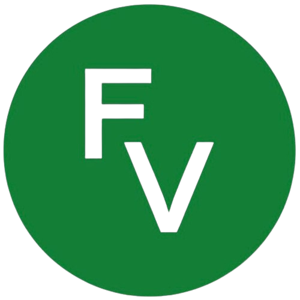

Fisioterapia neuromúsculo-esquelética
Diagnóstico, tratamiento y manejo de trastornos que afectan músculos, huesos, nervios y tejidos blandos.

fisioterapiavalenciaFisioterapia · Valencia
Te escucho, evalúo tu condición y te acompaño a conseguir tus objetivos con un tratamiento adaptado a ti.
La persona en el centro del abordaje terapéutico.
01Hola, soy Valeria
VALENCIA · ESPAÑASoy Valeria Antonella Loda, fisioterapeuta colegiada especializada en desórdenes neuromúsculo-esqueléticos y rehabilitación traumatológica.
Mi propia experiencia como paciente me llevó a una manera de trabajar cercana, rigurosa y centrada en cada persona.
Áreas de trabajo
Diagnóstico, tratamiento y manejo de trastornos que afectan músculos, huesos, nervios y tejidos blandos.
Prevención y recuperación de lesiones para deportistas profesionales y amateur, con atención a tu disciplina y objetivos.
Acompañamiento antes y después de una cirugía para recuperar movilidad, fuerza y autonomía con seguridad.
Trabajo orientado a reducir dolor, mejorar la marcha, el equilibrio, la coordinación y la calidad de vida.
El enfoque VAL
Atención personalizadaCada tratamiento se adapta a tus necesidades, tu momento y tus objetivos.
En el idioma que prefierasAtención en español, italiano, inglés y francés básico.
Un entorno acogedorUna consulta luminosa y tranquila en Valencia para que te sientas cómodo desde el primer día.
Contacto
Para pedir cita o resolver cualquier duda, puedes escribirme directamente por WhatsApp.
Escribir por WhatsApp